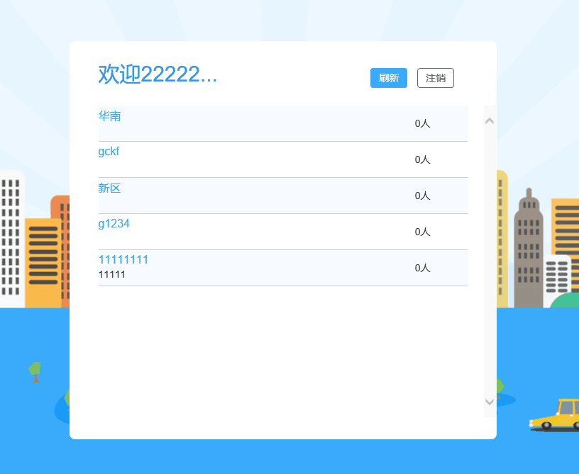
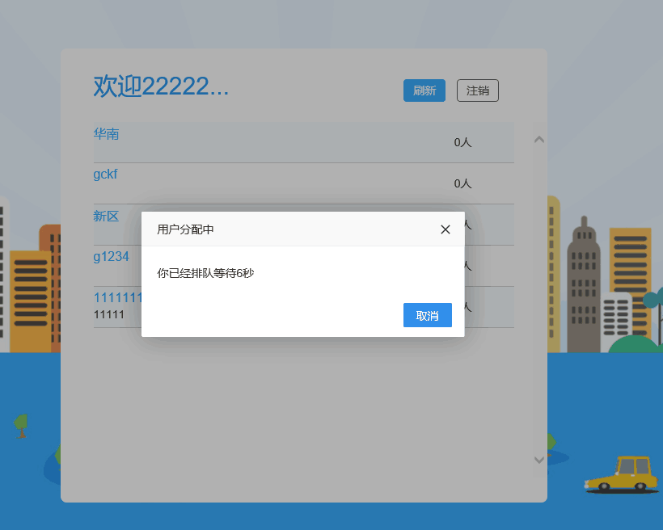
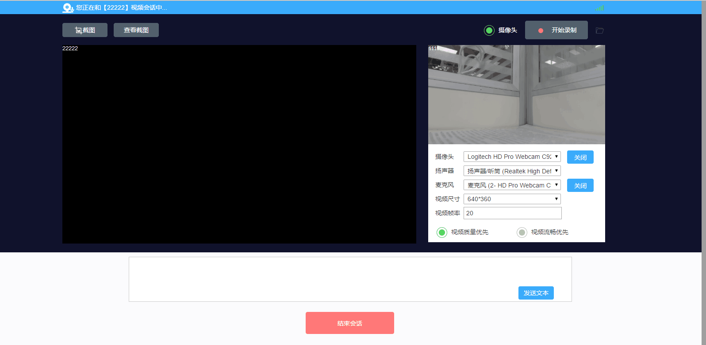

Demo程序介绍
Examples 目录下Demo程序配置和功能简介。
视频会议
JavaScript编写，主要实现了透明传输，创建进入视频会议，用会议号进入视频会议，会议内视频墙、屏幕共享、音视频设置、IM聊天。
关闭所有浏览器点击安装SDK，然后打开Examples 目录下面的Meeting(web)->index.html
输入服务器地址和用户ID，登录

- 输入会议主题，创建并进入会议

- 进入视频会议主界面

- 输入会议号进入会议

本地双录
JavaScript编写，主要实现本地入会，创建会议，进入会议，会议内录制、上传录制、音视频设置、视频播放、单双摄像头选择。
关闭所有浏览器点击安装SDK，然后打开Examples 目录下面的RecordDemo(web)->index.html
输入服务器地址和用户ID，登录

- 点击选择创建并进入会议

- 进入本地双录主界面

远程双录
JavaScript编写，主要了利用队列系统进行用户分配，然后呼叫分到的用户，双方进入同一个远程会话，创建会议，进入会议，会议内录制、pcm文件录制、上传录制、音视频设置、视频播放、屏幕共享、IM聊天。
关闭所有浏览器点击安装SDK，然后打开Examples 目录下面的RemoteRecordDemo(web)->index.html
输入服务器地址和用户ID，登录（坐席）

- 点击开启服务器。等待连接（坐席）

- 输入服务器地址和用户ID，登录（客户）

- 点击连接服务器（客户）

- 等待排队（客户）

- 进入远程双录主界面（坐席）

- 进入远程双录主界面（客户）

视频呼叫
JavaScript编写，主要了利用队列系统进行用户分配，然后呼叫分到的用户，双方进入同一个视频会话，创建视频，进入视频，视频内录制、音视频设置、发送文件、截图。
关闭所有浏览器点击安装SDK，然后打开Examples 目录下面的VideoCall(web)->index.html
输入服务器地址和用户ID，登录（坐席）
- 点击开启服务器。等待连接（坐席）

- 输入服务器地址和用户ID，登录（客户）
- 点击连接服务器（客户）

- 等待排队（客户）

- 进入远程双录主界面（坐席）

- 进入远程双录主界面（客户）